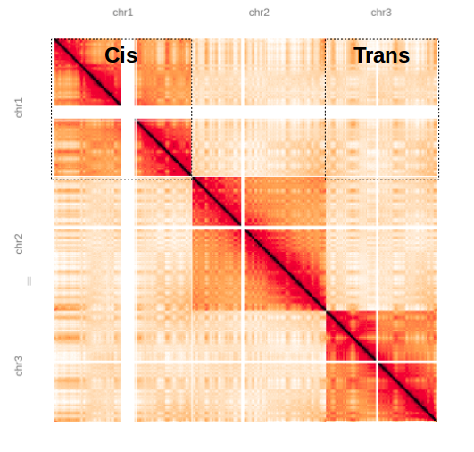
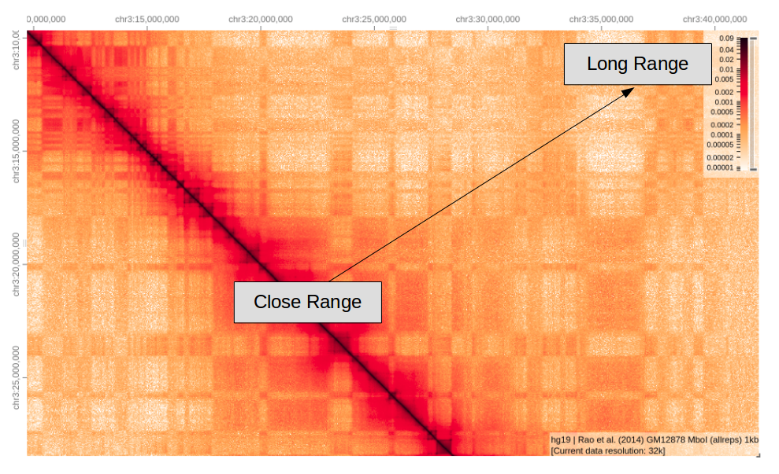
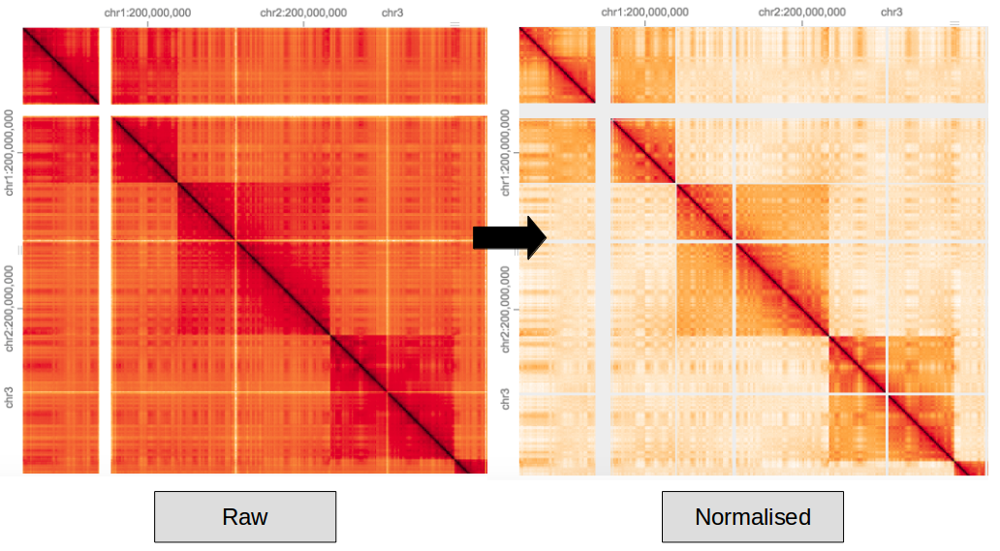
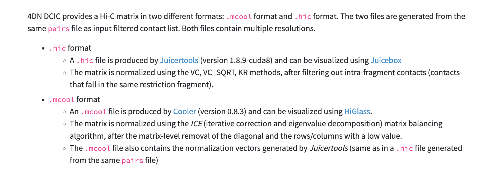
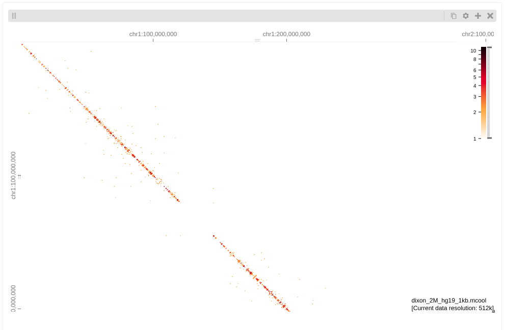
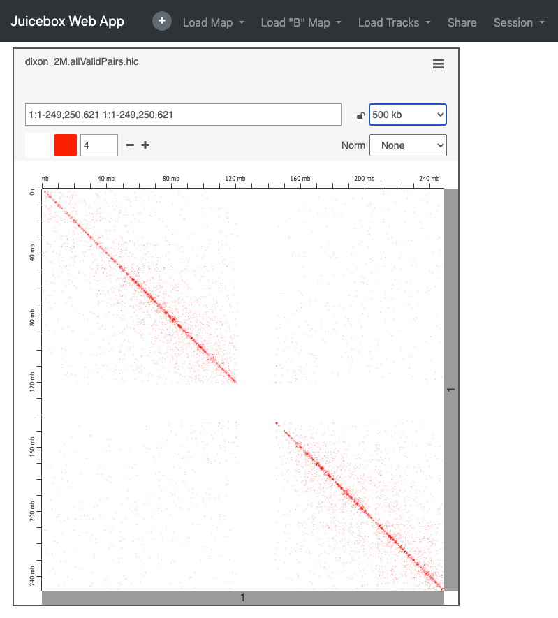
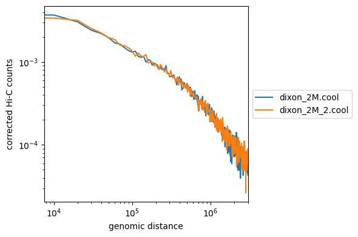
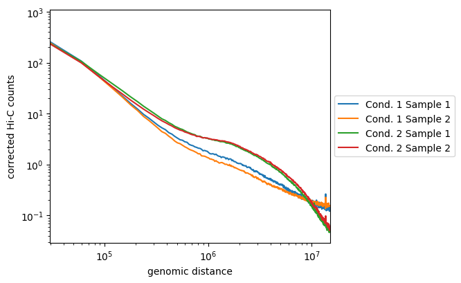

Before visualization of our matrix lets go over the basics of a contact map.
Areas of high intensity mean lots of interactions in that location, the matrix allows us to see interactions across the whole genome, both short and long range.

Here we have a matrix showing chromosomes 1, 2 and 3, you can clearly see chromosome territories, i.e. chromosomes are interacting with themselves (cis) with fewer interchromosomal (trans) interactions.
Here we are zooming into chromosome 3, as expected there are lots of local interactions close to the diagonal, these regions are close in the linear sense so are more likely to interact which each other. As we move further away from the diagonal there are fewer interactions as these regions are further apart.

Note; the lower left half of the matrix is just a mirror image of the the upper right.
Hi-C data contains systematic biases which need to be balanced. This is down to both technical bias of sequencing/mapping and biological artifacts such as GC content. Here the ICE method of normalisation is applied to a raw hic matrix.

After processing we should now have paired contacts that contain only valid interactions. This allows us to plot a matrix showing points of interaction. As mentioned previously, HiC-Pro has given us a matrix but it is not in the format we need. There are currently two principle formats used for Hi-C, these are each tied to their respective tools (.hic for Juicebox & .cool for HiGlass). Both formats/tools are supported by 4D Nucleome program.

‘A significant portion of bioinformatics is just converting data from one format to another.’ Jason Stajich
These are the pairs of coordinates for valid interactions only.
dixon_out/hic_results/data/dixon_2M/dixon_2M.allValidPairs
This is what we want to work with, to convert into out required format.
head dixon_out/hic_results/data/dixon_2M/dixon_2M.allValidPairsAs we’re going to be using HiGlass, lets convert the valid pairs into the cool format, the cooler tool can do this.
We can either do this by running multiple cooler commands directly or making use of the HiC-Pro script hicpro2higlass.sh
Using HiC-Pro Utilities This can be achieved by running;
Get the chromsizes file
cp /homes2/drober19/hic_workshop/chrom_hg19.sizes .Create an output directory
mkdir cooler_outNote the resolution ‘-r’ is set to 10kb for the cool file, this will also give us a .mcool file with multiple resolutions. -n matrix is balanced (normalised)
/library/software/misc_containers/containers/hicpro/3.1.0/hicpro_3.1.0_ubuntu.img hicpro2higlass.sh -i dixon_out/hic_results/data/dixon_2M/dixon_2M.allValidPairs -r 10000 -c chrom_hg19.sizes -p 2 -n -o cooler_out &
/library/software/misc_containers/containers/hicpro/3.1.0/hicpro_3.1.0_ubuntu.img hicpro2higlass.sh -i dixon_out/hic_results/data/dixon_2M_2/dixon_2M_2.allValidPairs -r 10000 -c chrom_hg19.sizes -p 2 -n -o cooler_out &Or if you want to do this by step by step, see https://github.com/mirnylab/cooler-binder/blob/master/cooler_cli.ipynb. Note this still requires some wrangling of the HiC-Pro output.
We should now all have a set of balanced matrices in the .cool/.mcool formats.
This mcool file can be loaded into HiGlass, unfortunately this can only been done by an admin but I’ve already added these files for demonstration;
 Remember this was just a subset of reads so we see a sparse matrix. We will play more with HiGlass later on using some different data.
An alternative visualisation tool is Juicebox, this uses the .hic format which is created using Juicer or Juicer Tools, thankfully HiC-Pro also comes with a script that creates this Juicebox file from our HiC-Pro output; hicpro2juicebox.sh
Create another output directory
mkdir juicer_tools_outWe can create .hic files by running;
sh PATH_TO_SCRIPT/hicpro2juicebox.sh -i dixon_out/hic_results/data/dixon_2M/dixon_2M.allValidPairs
-j /library/software/misc_containers/containers/hicpro/3.1.0/juicer_tools_2.13.06.jar -g hg19 -o juicer_tools_out &
sh PATH_TO_SCRIPT/hicpro2juicebox.sh -i dixon_out/hic_results/data/dixon_2M/dixon_2M.allValidPairs
-j /library/software/misc_containers/containers/hicpro/3.1.0/juicer_tools_2.13.06.jar -g hg19 -o juicer_tools_out &Once we have the .hic files we can load these into directly into Juicebox, we have a choice between the web version and a local GUI which can be run on your own machine (much like IGV). For simplicity, today we will just use the webtool (Note the GUI version does offer some additional functionality).
This can be access here; https://aidenlab.org/juicebox/

To load your data select ‘Load Map’ from the top toolbar and then ‘Local File’ to navigate to your file. In this case you will need to download the file from your public_html space, or copy this from the server.
e.g. https://bifx-core3.bio.ed.ac.uk/~drober19/Hi-C_workshop/juicer_tools_out/
Again, this is just a subset of the original experiment, see you if you can find the full dataset within the Juicebox data archive (reminder this is from Dixon et al. human IMR90 fibroblasts).
As we’ve seen, one of the main advantages of Juicebox is the ease of loading our own data, there are advantages to both platforms, personally I prefer HiGlass which we will delve further into shortly.
Once we have matrix files (cool / hic) we can use these as input for other tools for analysis, HiCExplorer is a tool with a lot of useful functions for further analysis. It accepts multiple file formats :)
Lets compare our matrices using ‘hicPlotDistVsCounts’, this allows a quick comparison between multiple matrices of the Hi-C counts ‘enrichment’ at different genomic distances. Biological replicates should display the exact same distribution
This creates a distance vs. Hi-C counts plot;
hicPlotDistVsCounts -m cooler_out/dixon_2M.cool cooler_out/dixon_2M_2.cool -o counts_vs_dist.png 
How do our samples look? Remember these are small subsets.
Above is an example where replicates from condition one are not well correlated, but are distinct from the second condition. The second are well correlated and display enriched long-range contacts. (All are smoother as these were binned at 50kb)